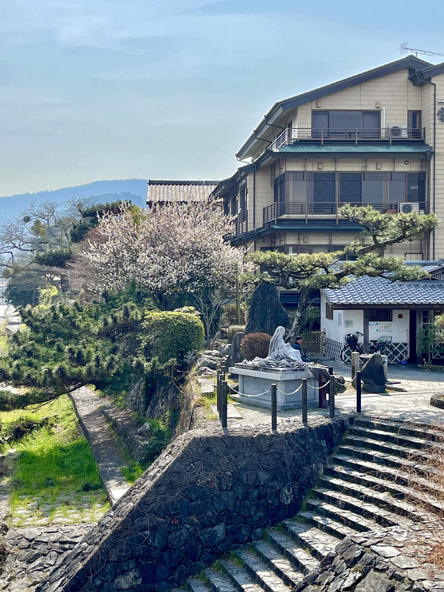
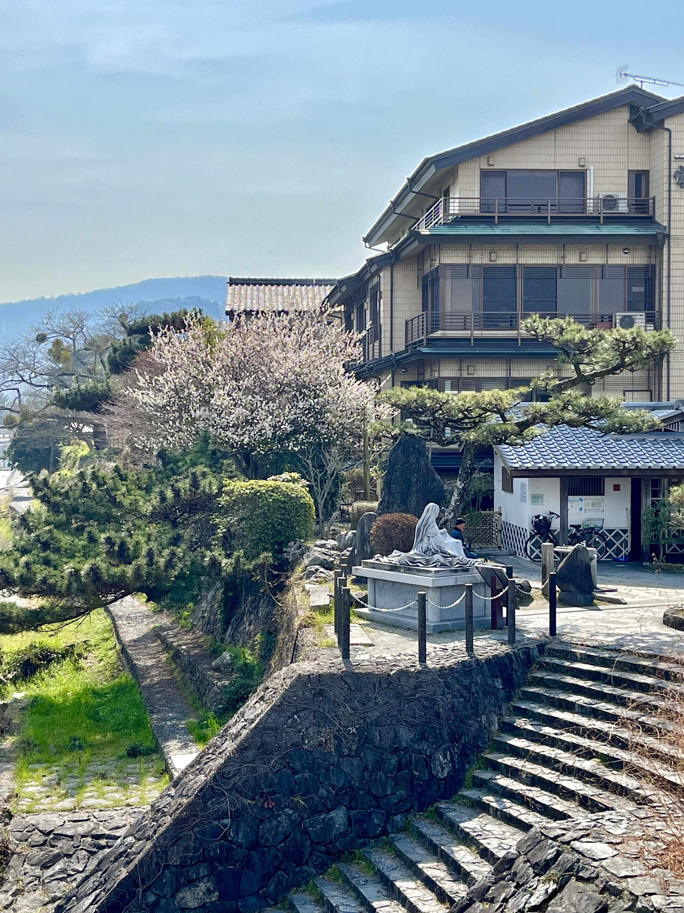

Uji is a small city located in the southern part of Kyoto prefecture, Japan, known for its rich history and beautiful natural scenery. The city is home to many historical landmarks, including the UNESCO World Heritage site, the Byodo-in Temple, and the Ujigami Shrine, one of the oldest Shinto shrines in Japan. One of the most prominent landmarks in Uji is the statue of Lady Murasaki Shikibu, located near the Uji River. Lady Murasaki Shikibu was a renowned author and lady-in-waiting at the imperial court during the Heian period. Her masterpiece, "The Tale of Genji," is considered one of the world's first novels and a literary masterpiece. The statue depicts Lady Murasaki sitting on a bench, holding a book in her hand, and gazing into the distance, symbolizing her contemplative and introspective nature.
As our group stepped foot in Uji, we were greeted by the stunning sight of a wide and serene river that seemed to stretch endlessly into the distance. Its crystal-clear waters shimmered in the sunlight, reflecting the bright blue sky above, creating a seamless blend of blue hues that was truly mesmerizing. I couldn't help but stand in awe of the breathtaking scenery before me, as I felt completely immersed in the tranquil beauty of Uji. The gentle flow of the river and the soothing sound of the water added to the peaceful ambiance, making it the perfect spot for relaxation and reflection. The expansive river was undoubtedly one of the most striking natural features of Uji, and I was grateful to be able to witness its beauty firsthand.